毕设文献笔记（一）
毕设文献笔记（一）
Triangle counting in large networks: a review
综述型文章，介绍三角形计数的应用场景、常见方法。
基础概念
定义
G(V,E)：简单连通无向图，无重边
d(u)：度，最大为\(d_{max}\)
adj(u)：和点u相邻的节点集合
inc(u)：和点u连接的边
inc(e)：和边e相连的点
triple(u, v, w)：以点v为中心的三元组，（形如u-v-w则为开放的，形成三角形则为封闭的）
triangle：由三个封闭的三元组组成
\(\Pi_v\)：以v为中心的三元组的集合，全集为\(\Pi\)
\(\Lambda\)：三角形的集合
t(G)：G中三角形数量
\(\gamma(G)\)：传递度，封闭的三元组数量 / 三元组数量，即\(t(G) = \frac{1}{3}\gamma(G)|\Pi|\)
Metropolis-Hastings Algorithm
Markov Chain Monte Carlo 采样的变体，结合参考资料第一篇才能看懂
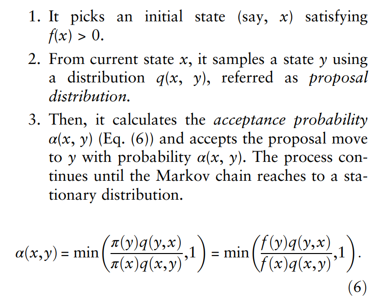
Importance Sampling
重要性采样的基本思想是对概率函数密度高的区域尽量多采样，对概率密度值低的区域少采样。
文章结构
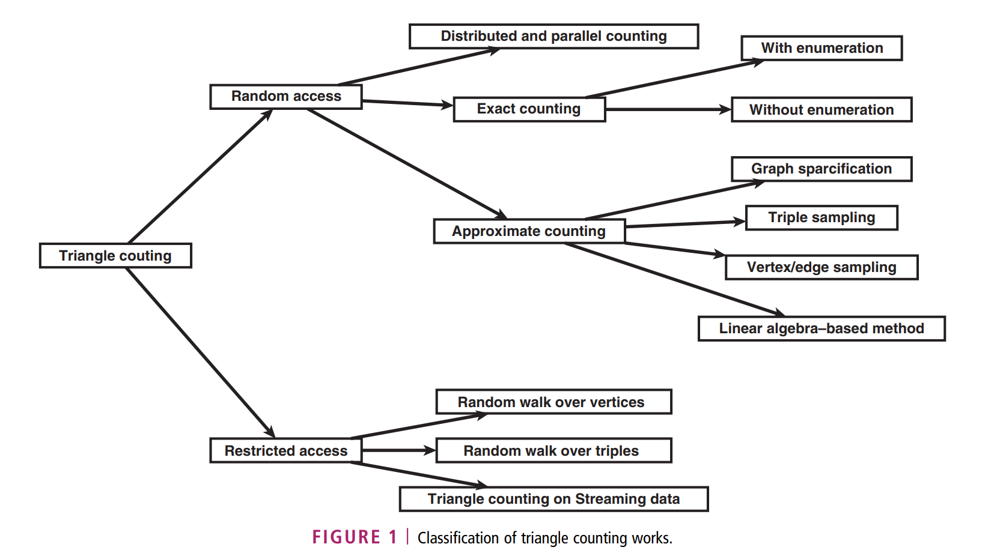
三角形准确计数 + 随机访问
假设：可O(1)获取点的临边，adj(u)有序（于是可以O(logN)用二分回答是否存在特定边，但由于最坏情况才到对数级，且平均度数一般都是常数，所以也可以视作常数时间；或者用hash也可以O(1)）
只计数
- 邻接矩阵的乘法
- \(A^3[i, i]\) = 从i到i走三步的方法数
- 所以如果有三角形，会被算两次（顺逆时针各一次），而且三个顶点还会各算一遍
- 于是一个三角形反映到\(A^3\)的迹上会被算6次，即\(t(G) = \frac{1}{6}Tr(A^3)\)
- 复杂度\(O(n^3)\)
- AYZ（文章在念经，一定是这样）
- 定义$Δ = m^{(ω − 1)/(ω + 1)} \(，其中\)m$为边数
- 高度数：度数 > \(\Delta\) ，低度数反之
- 对于低度数的顶点，可以遍历每一条边(u, v)，如果v是低度数顶点，再遍历v的邻接边，所以复杂度为\(O(m\Delta)\)，可计算出所有包含了低度数顶点的三角形
- 对于高度数的顶点，上一步没有统计到的三角形三个顶点一定都高度数的，所以先用这些顶点构建生成子图，再用上面的邻接矩阵乘法求三角形数量，复杂度为\(O(|高度数顶点个数|)^\omega\)，其中高度数顶点个数小于\(2m/\Delta\)
- 二者相加，总时间复杂度为\(O(m^{2ω/(ω + 1)})\)
既计数又列举
- Itai and Rodeh 的古早方法
- 找到一个生成树，对于生成树中的每条边(u, v)，寻找u的前驱是否在图中，在则说明构成了一个三角形，对v同理
- 然后把该边删去，重新构建生成树
- 重复上述步骤，直到图中没有边了
- 每次检查需要O(m)的时间，最多\(O(\sqrt{m})\)次，所以总时间复杂度是\(O(m^{\frac{3}{2}})\)，但是数据结构耗时很多
- Node Iterator Algorithm
- 上一种的改版
- Edge Iterator Algorithm 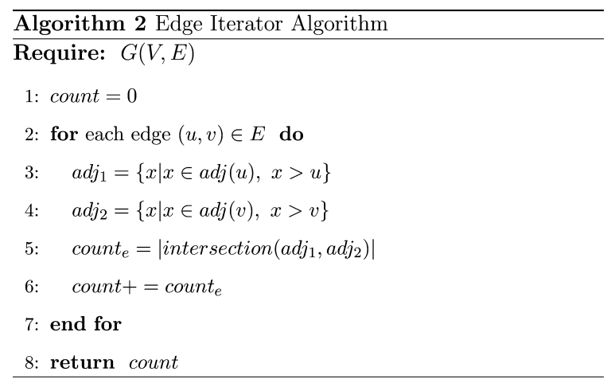
- 复杂度是\(O(m \cdot d_{max})\)
关于上界
前提：避免重复计数 + 边存在性可以O(1)检查
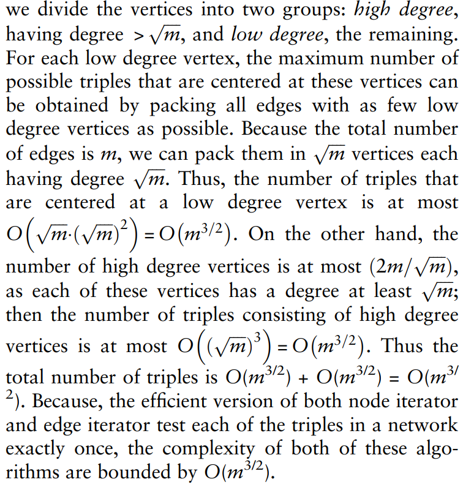
懒得翻译了，挺清晰的。
近似三角形计数 + 随机访问
（一些上学期的痛苦回忆涌向了我）
基于稀疏化的方法
- 取边的子集，在稀疏图上数准确的三角形数（所以复杂度都受这个限制），然后推算出原图的三角形数
- 可以视作一种均匀取样
- DOULION
- 生成稀疏图\(G_s\)：以p概率保留边，1-p去掉边，所以一个三角形被保留的概率为\(p^3\)
- 获得准确的\(t(G_s)\)
- 所以估计值为\(\hat{t}(G_s) = \frac{1}{p^3}t(G_s)\)
- colorful triangle counting
- 对每个点随机染一个颜色（1-N），只保留两端点颜色相同的边。和DOULION很相似，只不过这里的\(p = \frac{1}{N}\)，三角形被保留的概率为\(p^2\)（如果一个三角形被保留两边，那么三个点同色，第三边一定也在）
- 获得准确的\(t(G_s)\)
- 所以估计值为\(\hat{t}(G_s) = \frac{1}{p^2}t(G_s)\)
- 准确性较DOULION更好
- Etemadi et al.的方法
- 和DOULION相似，同样以p概率保留边，1-p去掉边，不过在数生成图中的三角形时会检查生成图中开口三角形的第三边原图中有没有，即三角形被保留的概率为\(p^2\)
- 所以估计值为\(\hat{t}(G_s) = \frac{1}{p^2}t(G_s)\)
- 准确性较DOULION更好
基于三元组采样的方法
- 对传递度的无偏估计，需要均匀的分布，最简单的方法是随机取一点，然后在该点的相邻节点集中随机取两点，这样会导致高度数点的三元组采样不足，低度数点的三元组采样过度
- 采样一些三元组，计算其中封闭的三元组占所有采样的比例
- Schank and Wagner 的采样方法
- 按以该点为中心的三元组数量为比例，对点进行采样，然后随机返回其中一个三元组
- Schank et al. 和 Kolda et al. 的方法
- 用上面的采样方法，近似计算了传递度
- 用Hoeffding Bound证明了近似error bound
- Al Hasan 的方法
- 即使在不均匀的采样下可能得到传递度的无偏估计
- 重要性采样
边或点采样的近似计数
- Rahman and Al Hasan 的方法（他刚出现过）
- 先对点采样，然后取其中的占比为p的一部分，数三角形，最终答案就是sum/p
- 还证明了对边采样的准确度更好
- 虽然对三角形的采样不是均匀的，但依旧是无偏的
基于线性代数的方法
- 回到一开始的矩阵相乘方法，由于是无向图，所以A是实对称的->特征值都是实数
- 准确计数需要计算准确的特征值来获得\(Tr(A^3)\)，太慢了
- 这里虽然不知道为什么，但是文章说现实的网络服从幂律，所以邻接矩阵是歪的（skewed），特征值也是歪的，也服从幂律【大大的问号】
- EigenTriangle algorithm
- 只要前k个特征值
- 【不太小的问号】
- 时间和准确度的平衡不好
- （tolerance parameter）不能保证准确性
限制访问下的三角形计数
- 最适合基于随机游走的近似方法
- Rahman and Al Hasan 提供了一堆随机游走的方法（又是他们）
在点上随机游走
- 前面提到了随机采样一个点，然后随机采样以这个点为中心的三元组的方法
- 这里的随机游走就是用来第一步采样点的，要求是采样的分布使三角形计数无偏
- 最简单的方法就是随机的从邻居节点中取下一个节点，这样不是无偏的，所以需要利用重要性采样
- Vertex-MCMC
- 没有用IS，用的是MH找到稳定分布\(\pi \sim \left( \begin{matrix} d(\cdot) \\ 2 \end{matrix} \right)\)，其中\(d(·)\)是点的度数
- 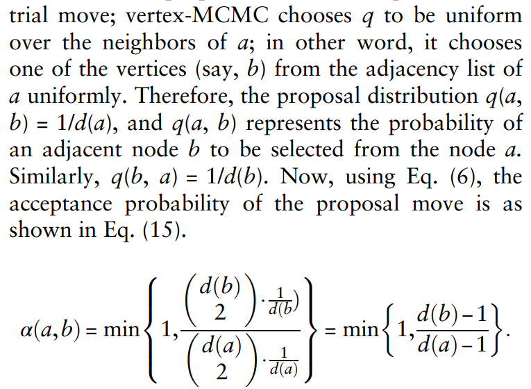
在三元组上随机游走
- 直接采样三元组，不采用上面两步走的策略
- 还是这两位，Rahman and Al Hasan 又提供了一堆随机游走的方法
- triple-MCMC
- 在三元组的集合上定义了一个邻居图，什么样的都行，这二位把它定义成有两个点一样的三元组为邻居
- 从任意的三元组开始，每次随机的找和当前三元组有一个节点不同的节点作为下一步
- 但用在数三角形时，这样不能保证是均匀的采样，于是用MH算法添加一个接受率
- 当然也可以用IS做采样得到传递度的无偏估计，但要求总三元组数是已知的
流数据的三角形计数
- 边顺序任意的流
- Bar-Yossef et al. 的古早方法
- 基于stream-reduction（我的中文失灵了）的方法
- 为了理论而，不实用
- Buriol et al. 的方法们
- 基于边的流
- 过三趟流的算法
- 第一趟记录点的数量n和边的数量m
- 第二趟随机取一条边和一个点，获得一个三元组（不需要三个点都是连通的）
- 第三趟看这个三元组是不是个三角形，是则把随机变量\(\beta\)记为1，否则记为0
- \(E(\beta) = \frac{3T_3}{T_1 + 2T_2 + 3T_3} = \frac{3T_3}{m\cdot (n-2)}\)，其中\(T_1\)是不连通的三元组数量，\(T_2\)是开口的三元组数量，\(T_3\)是三角形的数量，用边的数量可推此式
- 所以可以跑多次这个算法，获得平均的\(\beta\)
- 用切诺夫界证明了近似结果的可能性界
- 过两趟流的算法
- 第一趟：上一个算法的1+2，其中采样的时候采用reservoir sampling，即把见到的第一个存下来，之后遇到的第i个有1/i的概率把它替换
- 第二趟：上一个算法的3
- 一趟算法
- 如果被暂存的点和边之间的两条边流过了，那么把对应的变量设为1，如果流完后发现对应两条边的变量都为1，那么把随机变量\(\beta\)记为1，否则记为0，代表是否采样到过一个三角形
- 但是这时\(E(\beta) = \frac{T_3}{T_1 + 2T_2 + 3T_3} = \frac{T_3}{m\cdot (n-2)}\)，因为只有当被暂存的边在被暂存的点和其之间的两条边流过之前流过才有可能采样到这个三角形，这个概率是1/3
- Jha et al. 的方法
一趟流
定义\(\{G_t\}_{1 \leq t \leq m}\)是t时刻由已经流过的边（共m条）形成的图，每来一条边就更新一次估计
用两个reservoir序列列，一个存边的采样，一个存三元组的采样
每有一条新边到来，检查它能与多少三元组的采样形成封闭的三角形，然后更新两个序列（按一定概率插入第一个存边的采样，插入成功再按一定的比例把该边和边采样中结合形成的连通的三元组插入存三元组的采样）
后面看不懂啦【不太大的疑问】
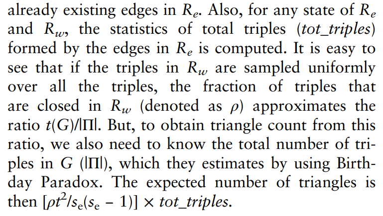
生日悖论：看起来离谱但是是对的的事件
分布式和并行的三角形计数
- 使用MapReduce框架
- Suri and Vassilvitskii. 的方法
- 第一轮从边集中并行生成//图中所有长度为2的路径
- 第二轮计算在第一轮生成的长度为2的路径中有多少条在图中有闭合边
- 还可以基于图的分治做，并行地对每个子任务跑准确计数
- Park and Chung 发现了这个方法中的冗余，提出了下面的方法
- Triangle Type Partitioning
- Pagh and Tsourakakis 的方法
- 在边采样的基础上提出的并行方法，所以是近似计数
- Arifuzzaman et al. 的方法
- 基于分布式存储的并行算法，使用消息传递接口
- 用连通分量对图进行划分，并从节点子集及其邻域生成导出子图
- 每个导出子图都分别在一个机器上跑，计数并相加
- Kim et al. 的方法
- 基于磁盘的架构，使用多核CPU
- 根据两个相邻节点各自的邻居列表是否都在内存里划分为内部三角形和外部三角形（只有一个在）
- （不是很有趣，我只是想找个理由不翻译了）
- Shun and Tangwongsan 的方法：
- 多核并行算法
- 第一步对每个节点按程度进行排序，并行地生成每个节点的邻接表，邻接表中只包含比当前节点排名高的节点
- 第二步从每个节点的排序邻接表中对三角形进行计数
- Rahman and Al Hasan 的方法（又双叒叕）
- 多核并行算法：将节点/边的遍历算法分布在多核上
实验结果比较
- 准确计数的实验对比Schank做过了
- 所以这篇文章只做了近似计数的方法的对比
- 数据集用的是 KONECT，但是它给的网址和我搜到的网址都访问不了了，不知道怎么回事
- 结论：基于稀疏化的方法都需要更多的时间才能达到与其他近似方法一样高的精度，都不如直接采样
其他的计数问题
- 比如k团（糟糕的回忆再次涌来），BronKerbosch algorithm
- Graphlet
counting（不是我不翻译，是我不知道怎么翻译），可能是这个：

- 看到最后我才翻到前面去看作者，我说怎么Al Hasan这位一直出现，原来这篇综述他是一作hhh
存在的问题
- 这段什么意思
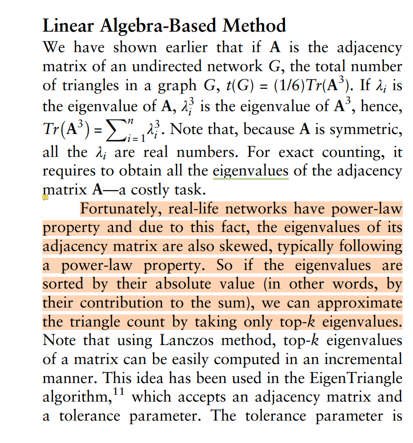
- stream-reduction 如何理解？
Owing to the stringent requirements of efficiency in the streaming model, designing efficient algorithms via reductions turns out to be a rather delicate matter. For example, consider a hypothetical streaming reduction R from problem A to problem B that works as follows: upon reading each data item in an instance (a stream) of problem A, the reduction R outputs a polynomially long sequence of data items to produce an instance (a stream) of problem B.
来源文章：Reductions in Streaming Algorithms, with an Application to Counting Triangles in Graphs
- 这里是割点还是连通分量？
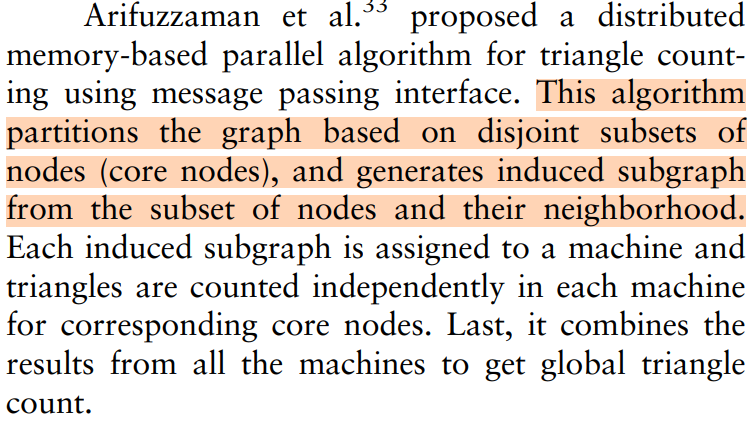
嗯，都不是，他只是随便分割了一下…见这里PATRIC: A Parallel Algorithm for Counting Triangles in Massive Networks，大概4.2章的位置
关于这个领域的第一篇文章，大概对现有的方法有了点了解吧，看起来有的方法看起来还挺“简单”的，竟然这么有效…这是否也是一种生日悖论呢？
马尔科夫蒙特卡洛：https://zhuanlan.zhihu.com/p/143016455 、https://zhuanlan.zhihu.com/p/619564589 、 马尔科夫的一些补充：https://www.zhihu.com/question/46539491/answer/2266717985 重要性采样：https://zhuanlan.zhihu.com/p/601619247
三角形准确计数AYZ：https://www.zhihu.com/question/36652212
数据集，以后可能有用？：https://blog.csdn.net/qq_24059779/article/details/85939043
图网络的结构信息概述：https://zhuanlan.zhihu.com/p/261418085
How to Count Triangles, without Seeing the Whole Graph
- 第一个可证明的亚线性算法
- getting estimates within 5% relative error by looking at 3% of the number of edges，开幕雷击啊
问题简述
目标
设计一个三角形计数的\((\epsilon, \delta)-estimator\)，意为算法在至少\(1-\delta\)的概率下能输出\(\overline{T}\)，使得\((1-\epsilon)T \leq \overline{T} \leq (1 + \epsilon)T\)
随机游走访问模型
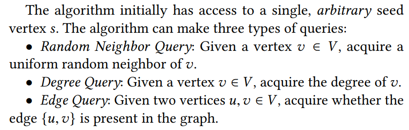
- 只能在已访问过的节点中进行度和边的查询
- 不知道图中总点、边数
均匀的点/边采样
- 这篇文章的方法用不了
- “the existing literature is surprisingly quiet”
复杂度指标
- 虽然时间效率也挺好但不考虑时间问题
- 目的是减少查询的次数
- 一些数据集：soc-orkut(3M vertices, 213M edges), soc-siaweibo (59M vertices, 523M edges), soc-twitter(42M vertices, 2.4B edges), socfriendster(66M vertices, 3.6B edges)
Triangle Estimation Through Random Incidence Sampling
- 本文的方法
- 基于团的计数方法
- 采样比例：边的低度数端点的度
- 很好，特别好，别人的都不行
引理3.1 \(d_E = \Sigma_{e \in E}d_e = O(m\alpha)\)
- Degeneracy, or the maximum core number, is the smallest integer k,
such that for every subgraph in the input graph, there is a vertex of
degree at most k
- 用\(\alpha\)表示输入图的degeneracy
用Chernoff Bound分析本文算法
TETRIS
- 输入：随机游走的长度r、子采样的数量l、估计混合时间（马尔科夫链到达平稳分布的时间，回忆MCMC）
- 随机选一个点开始，走r步，把经过的边存下来，计算每个边的度（两个端点的度更小的那一个），然后以边的度为权重进行采样，共采样l条边
- 对于采样得到的边e，TETRIS再从他的邻居节点中（是度数更小的端点的邻点集）均匀随机的取一个点w，用边查询检查w和e能否构成三角形
- 如果可以形成三角形，检查这个三角形是否被指定到的是这条边（对点先按度数，次按字典序进行排序，一个三角形被指定到前两个顶点所连边上）
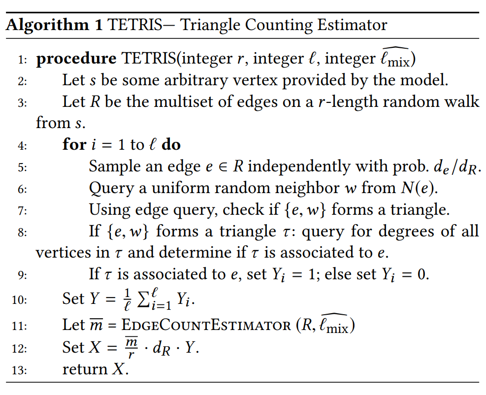
- 为了统计总共的三角形数量，需要估计总共的边的数量
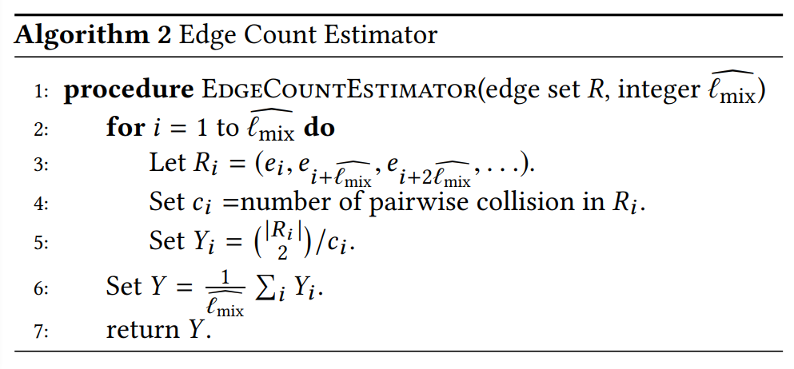
- 证明看不懂，alg2也没看懂，求助gpt，gpt说它看不了文章，很好，放着吧，TAT
- 文章说alg2的保证是 Probabilistic computations: Toward a unified measure of complexity这篇文章的直接推论，但…我更看不懂了
- 不过我大概理解了一下，按我的参考资料第一篇，“从\(x_0\)出发，经过t步后采样一个点，再经过t步采样下一个点。也就是说采样\(x_t, x_{2t}, \dots\)。这样是能保证采样结果是依据平稳分布的，因为相当于把每次采一个点的算法重复了n次”，也就是第三行在干的事情
- \(Y_i\)就是从采样中随便拿两条边出来，他们冲突的比例的倒数
- 哦！可以看附录里面的证明
- 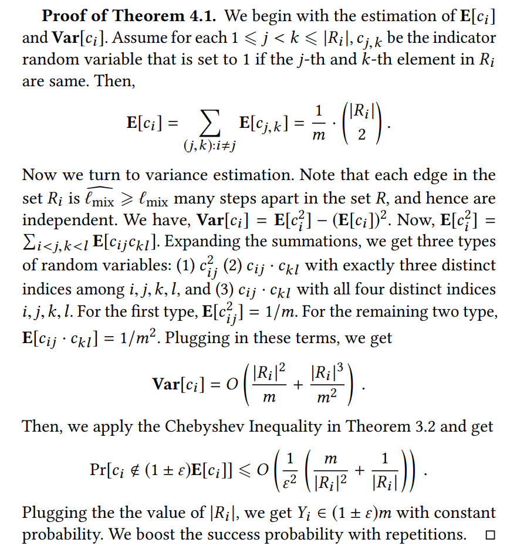
- 重读代码，发现for循环这句被我省略了…所以一直看不懂第六行，所以这个算法相当于通过多次采样，以边重复的概率估计整体边集的大小
- 已知从一个大小为m的集合里有放回的取两个边，两个边一样的概率为\(\frac{m}{m \cdot m} = \frac{1}{m}\)，所以第五行是那样的倒数
- 所以回过头来看算法1的12行，是在说总共的三角形数是估计的边数除以随机游走的路径长度再乘上采样的多重集的度这么多倍的采样到的三角形数，但这个怎么来的…后面倒是有不少对它是\((\epsilon, \delta)-estimator\)的证明，但我目前还没有直观地理解
理论分析
天书
实验评估
- 以最小的参数化实现了对所有数据集的高精度
- 不一致性小，收敛
- 在大多数数据集上，始终优于其他基准算法
- 初始节点的选择不影响算法准确性
参考资料
混合时间（甚至还是马尔科夫链的东西）：https://zhuanlan.zhihu.com/p/143016455?utm_source=wechat_session&utm_id=0
成对碰撞：https://zhuanlan.zhihu.com/p/142177195
Accelerating Triangle Counting on GPU
代码：https://github.com/pkumod/accelerating-TC
概述
- 北大的文章，之前在确定题目的时候搜到过，但是有关硬件的东西俺实在是调不来，所以当时只用来了解了一下三角形计数的概念
- 在不改变原来使用GPU的三角形技术方法的实现和数据结构的算法的情况下提出一种新的轻量级的图预处理方法
- 考虑
workload的平衡和resource的平衡 - 主要关注预处理
- Edge Directing
- 这个文章说无向图会先辈转成有向图再进行三角形计数，这是我没有在前面的文章里看到的内容
- 分为基于编号和基于度数的
A-direction
- Vertex Ordering
A-ordering
预备知识
GPU
- 软件
- CUDA语言采用block作为最小可编程单元
- 硬件
- 流多处理器（SM）
- 大但是慢的全局存储
- 小但是快的共享存储
- 一个block会被分配给一个SM
- 所以如果一个block中的任务们对资源的需求各不相同，就可以很好的并行
- 而且如果访问的存储区域一致，也能提高效率
相关工作
- GPU实现的三角计数
- 核心是workload平衡
- CPU实现的三角计数
- 三类：点迭代、边迭代和前向算法
- 当然还有图化简和矩阵乘法的方法
- LIst Intersection
- 列表中的交集？
- 两类方法：二分查找和排序-归并，二分查找更好
- 还有一些其他的合并方法
三角形计数中的同步
- bisson的工作
- 太困了，看不懂
- 大概去一个点的两个邻点的邻点的交集（我故意的），总之这样就能形成一个三角形
- 也就是u-v-w型的三元组，可以通过在u的邻接点集合里二分查找w来优化
分析模型
- 块内同步和二分搜索两种模型
- 看到最后的conclusion才明白，就是这篇文章首先提出了这样一个analytic model，基于这个模型中的两种处理方法（快内同步 / 二分查找）提出了两种预处理（edge-directing / graph ordering）方法
块内批量同步并行
- Intra-block BSP(Bulk Synchronous Parallel) Model
- 每个superstep的运行时间取决于工作负载最大的线程
- 即需要平衡每个节点的邻点列表的大小
- 把无向图变成有向图，然后计算每个点的出度，使得$ () = _{u V()} {|d_o(u) - {d_o}|}$ 最小
- \(\mathcal{P}\)就是选取的算法
- NP-Hard
资源平衡模型
- Resource Balance Model
- 在计算成本和内存访问成本之间平衡工作负载
- 合理的任务分配应该将具有不同工作负载特征(即内存密集型或计算密集型)的任务分组在一起，并将它们分派到一个块中
- 节点的排序（度数相近的放一起）很重要，A=order策略最好
- 排序后相邻的几个节点放到同一个桶里，一个桶分配给一个block
- 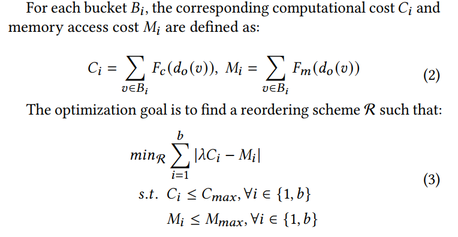
二者的联系
块内BSP模型的目的是实现块内更好的工作负载平衡，而顶点排序模型的目的是实现块间更好的资源利用。
边的方向
hardness analysis
- 我对
hardness的理解只有hardness of approximation是不可近似性的意思，所以hardness…到底什么意思…太模糊了 - 是对
块内批量同步并行中提到的把无向图转有向图的算法的分析 - 换成了0-1整数线性规划，这是NP-hard的
- 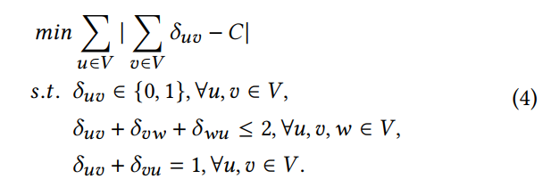
- 其中要求得到的有向图没有任何长度为3的有向环（文章说这样的有向环不会被计数，所以要避免）
近似算法
- 因为是NP-hard的，所以开发了一种
A-direction策略 - 定义core vertex为 \(d(u) \geq \bar{d_o} = \frac{|E|}{|V|}\)，否则为非核心节点
- 取舍边的过程：
- core - non core：\(v_n \rightarrow v_c\)
- non core - non core：任意
- 可以证明此方法不会比其他方法差
- 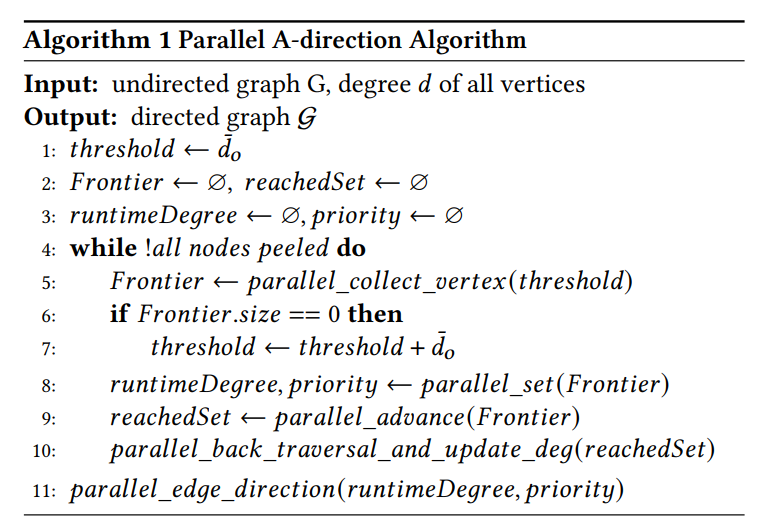
- 不断地“削去”度数比当前threshold小的节点
- 根据𝑝𝑟𝑖𝑜𝑟𝑖𝑡𝑦和𝑟𝑢𝑛𝑡𝑖𝑚𝑒𝐷𝑒𝑔𝑟𝑒𝑒,边优先从早被削去的点指向晚被削去的点，然后从拥有较小的𝑟𝑢𝑛𝑡𝑖𝑚𝑒𝐷𝑒𝑔𝑟𝑒𝑒的顶点指向较大𝑟𝑢𝑛𝑡𝑖𝑚𝑒𝐷𝑒𝑔𝑟𝑒𝑒的顶点
近似比
熟悉的痛苦经历，看不懂啊
- 使用了符合幂律的图配置模型—ACL model
- 还有真实的数据集it2004、cit-Patent、com-lj、kron-log21
图中点的排序
- graph ordering
- 是针对
资源平衡模型部分的公式(3)的分析
hardness 分析
- NP-hard
- 对于公式(3)，取特殊值（两个桶，\(b = 2,
\lambda = 1\)），目的是找到是否有一个对点的分配使得\(C_1 = M_1, C_2 = M_2 \; and \; C_1 \leq C_{max},
C_2 \leq C_{max}\)，其中名词：computational cost 𝐶𝑖 和 memory
access cost 𝑀𝑖，把这个算法成为
DP - 首先
DP算法一定属于NP，因为这样的分配可以在多项式时间内被验证 - 然后就是证明原问题可以在多项式时间内被归约到
DP，且DP问题的解是原问题的解 DP是NP-complete，所以原问题NP-hard
解决方法
- 采用启发式的算法，贪心
- 把点以在邻接点集中二分查找时对存储的需求和计算的需求的多少，划分为存储主导和计算主导的两类
- 存储主导的点扔到内存资源需求最少的桶里（好怪）
- 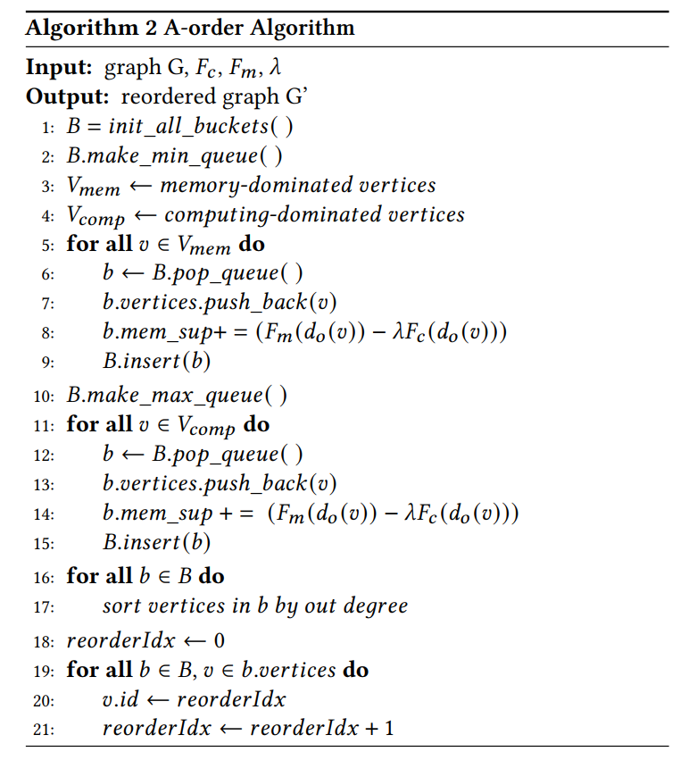
- \(𝑂(|𝑉|𝑙𝑜𝑔|𝐵|)\) ，\(|B| << |V|\)
参数的确定
- computing intensity 𝑐 (or 𝐹𝑐)、memory intensity 𝑚 (or 𝐹𝑚)：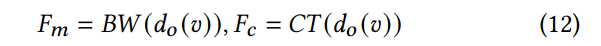
- 𝜆 ：
- 做实验估计
- 平衡点：计算和存储资源充分利用
- 没太看懂，总之通过找平衡点找到了𝜆的取值
实验
- 数据集：
- 现实的真实数据：SNAP、HPEC graph challenge、WebGraph
- 人造的数据集：Kronecher generator、SNAP
- 用upscaling的方法放大真实的图
- 对比的GPU三角计数算法：
- Gunrock
- TriCore
- Fox的方法
- Bisson的方法：匹配计算资源和负载
- Hu的方法
- Edge directing
- bassline：D-direction
- Graph ordering
- 现有的方法对比：
- DFS
- BFS-R
- SlashBurn
- GRO
- 他们的预处理时间都太长了
- bassline：原顺序，即不做预处理
- degree-based反而是最慢的
- 两种方法结合